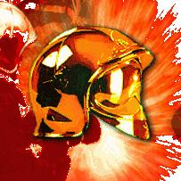

Forums galactiques > Taverne galactique : lieu de discussion informel > [ Le GIPN et La liste des COALITIONS actuelles ]
| Booster Réputation à la taverne : 1494  13/06 ETU 20:24  | Score : 0 Détails Up
| ||
| Locke Réputation à la taverne : 182  13/06 ETU 22:29 | Score : 0 Détails Le GICA recrute toujours, envoyez votre demande d'adhésion à Helios, pleins de cadeaux de bienvenue aux jeunes commandants.
Le GICA :"toujours une longueur d'avance" | ||
| daetha Réputation à la taverne : 526  13/06 ETU 23:13 | Score : 0 Détails
Le GICA :"toujours un boulet d'avance" Hein Locke ? | ||
| Booster Réputation à la taverne : 1494 18/06 ETU 09:44 | Score : 0 Détails UP pour les nouveaux !
| GICA Qui contacter ? : Helios | La Triade Eternelle. Qui contacter ? : Cesco Imperator. | La Fondation Nouvel Espoir Qui contacter ? : Booster | LGX : La Ligue des Gentlemen Extraordinaire Qui contacter ? : Wolverine | La Hache de Nitar Qui contacter ? : General_Louis | L'O.M.B.R.E Qui contacter ? : Sombrecoeur | Le Club Leviathan Qui contacter ? : Hiram | La Confrérie des Templiers Qui contacter ? : Lord Ax Ajoutons la société RW. Pour cela, contactez Seb-RW ! | ||
| SP 42 Réputation à la taverne : 0  25/06 ETU 17:05 | Score : 0 Détails petit Up (pour moi par exemple) mais vu que tout le monde ne fouille pas comme moi je le fait... jesper que vous ne m'en voulez pas ^^
| ||
| Demonia Réputation à la taverne : 157  25/06 ETU 17:29 | Score : 0 Détails Non, bonne idée de faire un petit up de temps en temps sur ce sujet.
| ||
| Absolute Sith Réputation à la taverne : 49  25/06 ETU 17:33 | Score : 0 Détails Je trouve cela interessant.
Mais comment savoir ce que chacune revendique ? Enfin sans être obligé de joindre chacun des contacts sus nommés... Que le côté obscur de la farce soit avec vous et que meurent les Elmos. | ||
| Booster Réputation à la taverne : 1494 25/06 ETU 17:36 | Score : 0 Détails Pour cela, consultez le Galactic International Politic News, à l'Assemblée (en particulier les numéros deux et trois, mais ceux-ci sont assez loins).
Numéro quatre en phase de préparation ;) | ||
| Absolute Sith Réputation à la taverne : 49 25/06 ETU 18:03 | Score : 0 Détails La recherche fut longue et ennuyeuse mais je crois avoir trouvé mon bonheur ;)
| ||
| Cesco Imperator Réputation à la taverne : 3122  26/06 ETU 07:49 | Score : 0 Détails Devant l'afflux de demandes, je tiens à vous signaler, nobles commandants, que la Triade n'a jamais été une en quête d'accroissement de tous genres, et que vu nos problèmes d'espions désormais connus, nous ne recrutons pas en ce moment.
Respectueusement, Cesco. | ||
| y0 Réputation à la taverne : 43  26/06 ETU 11:09 | Score : 0 Détails A moi d’ajouter quelque chose.
Concernent la RW. Notre estimé fondateur étant absent en ce moment, Contactez de préférence Archi71. A défaut, n’importe qui portant le symbole RW fera l’affaire. | ||
| master golum Réputation à la taverne : 49  26/06 ETU 11:19 | Score : 0 Détails Et nous
L'Ordre des Templiers recrute nous ne sommes pas en manque d'effectif mais notre organisation nous permet d'avoir plus de membres voulant de l'aide et un solide appuis en tout genre Contactez Lord Ax pour cela car Hotfoot revient seulement se soir il me semble Ou comme disait yO qui que ce soit portant l'embleme des Templiers il transmettra le message!!! Sachez aussi que notre but est tres semblable au Templiers Nous jurons aider les oprimes les spoliés et nous opposés a la volonté injuste des tyrans Rejoingnez nous !!! | ||
| Zeuhl Wortz K Réputation à la taverne : 188  26/06 ETU 12:05 | Score : 0 Détails Il est dans la nature de l'homme d'opprimer ceux qui cèdent et de respecter ceux qui résistent...Et bien nous Respectons et aidons les opprimés et scandons notre incoercible colère sur les oppresseurs....Cependant les opprimés en révolte ont-t-il réussi à fonder une société non oppressive ?...
Les Templiers agissent mais aussi reflechissent, la réflexion est une arme à deux tranchants... | ||
| Booster Réputation à la taverne : 1494 29/06 ETU 14:14 | Score : 0 Détails Mise à jour :
| GICA Qui contacter ? : Helios | La Triade Eternelle. (ne recrute plus) Qui contacter ? : Cesco Imperator. | Le Syndicat (ne recrute plus) Qui contacter ? : Alex Rider | La Fondation Nouvel Espoir Qui contacter ? : Booster | LGX : La Ligue des Gentlemen Extraordinaire Qui contacter ? : Wolverine | La Hache de Nitar Qui contacter ? : General_Louis | L'O.M.B.R.E Qui contacter ? : Sombrecoeur | Le Club Leviathan Qui contacter ? : Hiram | La Confrérie des Templiers Qui contacter ? : Lord Ax | La société RW. Qui contacter ? : Seb RW ou archi71 | ||
| Hotfoot Réputation à la taverne : 267  29/06 ETU 15:13 | Score : 0 Détails La confrerie des Templiers ne recrute plus ou du moins tres rarement!
HRP: On est tous des amis en dehors de la galaxie mise a part BP69! /HRP | ||
| bigfrom Réputation à la taverne : 27  29/06 ETU 16:45 | Score : 0 Détails Salutations Commandants, Commandantes
Je me nomme Commandant Bigfrom. Je suis actuellement a la recherche d une coalition. Ou pourquoi pas en creer une nouvelle. Cordialement Commandant Bigfrom. | ||
| Roi Liche Réputation à la taverne : 23  29/06 ETU 19:38 | Score : 0 Détails Mise à jour :
| Fondation de L'aigle Blanc. Qui contacter ? : Roi Liche | GICA Qui contacter ? : Helios | La Triade Eternelle. (ne recrute plus) Qui contacter ? : Cesco Imperator. | Le Syndicat (ne recrute plus) Qui contacter ? : Alex Rider | La Fondation Nouvel Espoir Qui contacter ? : Booster | LGX : La Ligue des Gentlemen Extraordinaire Qui contacter ? : Wolverine | La Hache de Nitar Qui contacter ? : General_Louis | L'O.M.B.R.E Qui contacter ? : Sombrecoeur | Le Club Leviathan Qui contacter ? : Hiram | La Confrérie des Templiers (ne recrute plus) Qui contacter ? : Lord Ax | La société RW. Qui contacter ? : Seb RW ou archi71 | ||
| Booster Réputation à la taverne : 1494 29/06 ETU 19:57 | Score : 0 Détails | Fondation de L'aigle Blanc.
Qui contacter ? : Roi Liche Vous le contacterez pour me donner les informations sur votre coalition Roi Liche ? Merci. | ||
| Booster Réputation à la taverne : 1494 01/07 ETU 09:10 | Score : 0 Détails Petit up pour ceux désirant des infos sur les coalitions existantes
| ||
| -[Aerÿnn]- Réputation à la taverne : 2661  08/07 ETU 18:34 | Score : 0 Détails | GICA
Qui contacter ? : Helios | La Triade Eternelle. (ne recrute pas) Qui contacter ? : Cesco Imperator | Le Syndicat (ne recrute pas) Qui contacter ? : Alex Rider | La Fondation Nouvel Espoir Qui contacter ? : Booster | LGX : La Ligue des Gentlemen Extraordinaire Qui contacter ? : Wolverine | Fondation de L'aigle Blanc. Qui contacter ? : Roi Liche | La Hache de Nitar Qui contacter ? : General_Louis | L'O.M.B.R.E Qui contacter ? : Sombrecoeur | Le Club Leviathan Qui contacter ? : Hiram | La Confrérie des Templiers (ne recrute pas) Qui contacter ? : Lord Ax | 19 (ne recrute pas) Qui contacter ? : Référence inconnue |
Forums galactiques > Taverne galactique : lieu de discussion informel > [ Le GIPN et La liste des COALITIONS actuelles ]